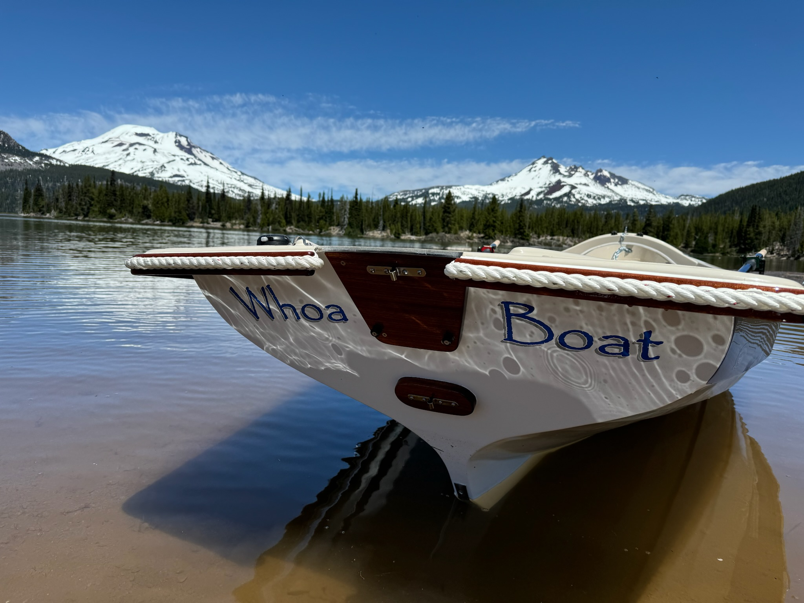

Our boat is a Salish Sea Voyager boat (from Gig Harbor Boat Works). We've been rowing it in the Cascade Lakes and we're excited to learn more about the salt rowing it out of Mystery Bay.
We have a forward rowing system we can install which allows me to row normally while facing forward. My neck doesn't turn like it used to so this is a great way to row and navigate without the strain. It looks weird, but it works well.